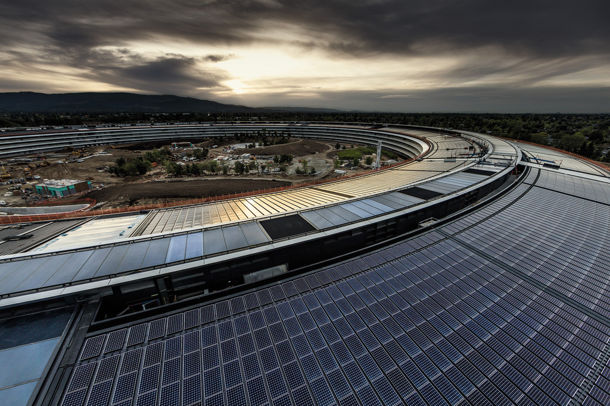
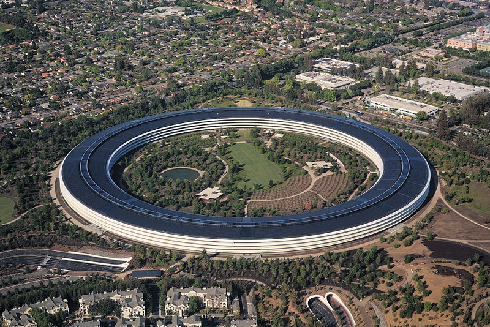

Apple est une entreprise multinationale américaine qui conçoit et commercialise des produits électroniques grand public, des ordinateurs personnels et des logiciels informatiques.
Apple est créée le 1er avril 1976 dans le garage de la maison d'enfance de Steve Jobs à Los Altos en Californie par Steve Jobs, Steve Wozniak et Ronald Wayne14, puis constituée sous forme de société le 3 janvier 1977 à l'origine sous le nom d'Apple Computer, mais pour ses 30 ans et pour refléter la diversification de ses produits, le mot « computer » est retiré le 9 janvier 2007
|  |  |
Apple Park, nommé Apple Campus 2 durant sa construction, est le siège social d'Apple situé à Cupertino en Californie depuis avril 2017 remplaçant Infinite Loop, l'ancien campus d'Apple. Il est situé essentiellement sur le terrain d'un ancien campus d'Hewlett-Packard. L'Apple Park se distingue par sa forme circulaire, sa grande taille avec une superficie de plancher de 260 000 m2, et son coût estimé à environ 5 milliards de dollars. Il accueille 12 000 employés d'Apple. Il est également remarquable de par son alimentation énergétique essentiellement tirée des nombreux panneaux solaires installés sur ses toits.